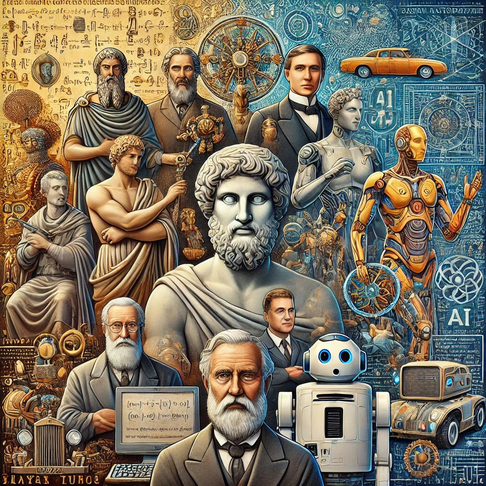
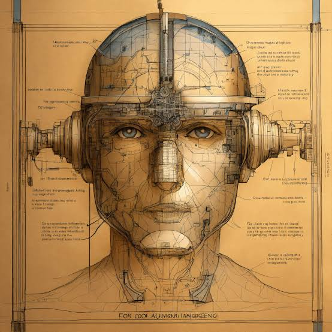

Ana Sayfa |
Nedir? |
Tarihçe |
Kullanım Alanları |
Çeşitleri |
Avantaj & Riskler |
Haberler |
Gelecek |
SSS |
Hakkımızda
Yapay Zekanın Tarihçesi
Yapay zeka kavramı günümüzde çok popüler olsa da kökleri 20. yüzyılın ortalarına kadar dayanmaktadır.

Önemli Dönüm Noktaları
- 1950 - Turing Testi: Alan Turing, "Makineler düşünebilir mi?" sorusunu ortaya attı ve Turing Testini geliştirdi.
- 1956 - Dartmouth Konferansı: "Yapay Zeka" (Artificial Intelligence) terimi ilk kez resmi olarak kullanıldı.
- 1997 - Deep Blue Zirvesi: IBM'in Deep Blue bilgisayarı, dünya satranç şampiyonu Garry Kasparov'u yendi.
- 2011 - IBM Watson & Siri: Sesli asistanlar ve akıllı soru-cevap sistemleri günlük hayata girdi.
- 2020 ve Sonrası - Üretken AI: ChatGPT ve Midjourney gibi devasa yapay zeka modelleri dönemi başladı.
Geleceğe
Günümüzde yapay zeka sadece belirli görevleri yapan sistemlerden,
insan benzeri üretkenlik sunan devasa modellere dönüşmüştür.
